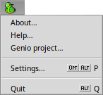
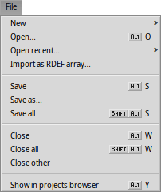
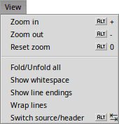
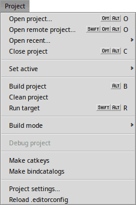
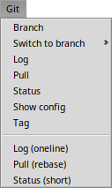
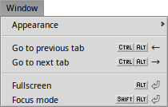

| Index |
|
The Genio menu The File menu The Edit menu The View menu The Search menu The Project menu The Git menu The Window menu |
The Menus
The vast majority of Genio's menu items are trivial or obvious.
Let's go through all menus and only pick those items that deserve a bit of explanation.
 The Genio menu
The Genio menu

opens the GitHub page of the Genio project, as shortcut to file an issue or participate in discussions.
opens the application's Settings window.
The File menu

offers a sub-menu with template files and folders.
In it is an item that opens a folder where you can put your own files/folders to use as templates. Those, too, will then be available in the sub-menu.
When you're editing an .rdef resource, you can use to choose any file that'll then get inserted as array at the end of the .rdef file.
will scroll to and select the file you're currently editing in the Projects pane. It's also available from the context menu of a file's tab above the editor view.
The Edit menu
removes all spaces and tabs at the end of the line for the whole file.
is described on the Editor page under Code completion.
converts the end-of-line character of the current file to either , or .
lets you set the programming language of the current file manually. Genio normally auto-detects this correctly.
The View menu

You can , ALT + -, the editor view, which can be handy to scroll through long source files. Perhaps more conveniently, this can also be done by scrolling up/down with the mouse wheel while holding ALT.
The Search menu
, ALT F, and , ALT R, are described on the Toolbar page under Find bar and Replace bar.
The Project menu

and are described on the QuickStart page under Local project and Remote project.
and will build or clean the active project according to the set , either as "release" or "debug".
will launch the built binary.
For the above to work, you need to have your project properly configured in the Project settings….
If you're building a localized application, you can generate new en.catkeys with and do a to add the available translations as resources to the built binary.
If you're using EditorConfig to manage your coding style settings, you can choose to force an update of the open files when you've edited an .editorconfig file.
The Git menu

This menu offers a number of often used Git commands. It's only available if you're working with a git repository, of course. Check the Panes page under Source control how to initiate a git repo.
All git commands print their output in the Console I/O tab.
The Window menu

You can show/hide panes and toolbar under .
Genio's window can be made (ALT ENTER).
In (SHIFT ALT ENTER) the toolbar and the projects and output panes are additionally hidden to minimize distractions.
Hit ALT ENTER again to return to normal mode.
Back: Toolbar Next: Settings